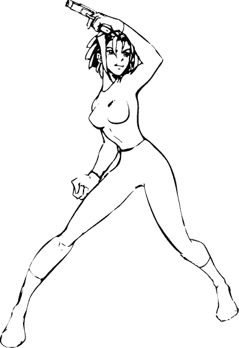
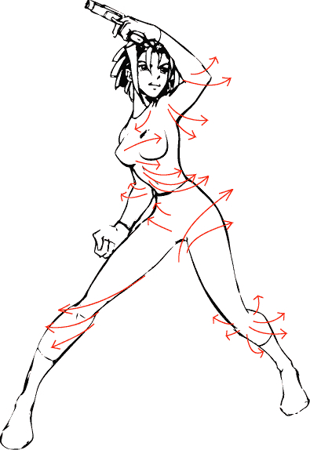
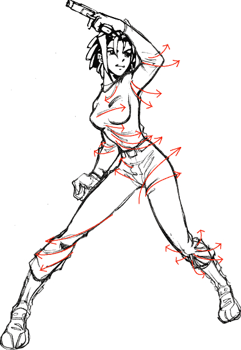

⊹˙⋆ TRANG PHỤC ⋆˙⊹
Sep 20, 2023
TAG: TUTORIALS N REFERENCES
Tôi không định viết hướng dẫn cho các bạn cách vẽ quần áo, vì có quá nhiều phong cách. Bài hướng dẫn này sẽ giúp bạn hiểu cách để quần áo phủ trên cơ thể như thế nào. Nhờ đó bạn sẽ biết được ít nhất là nguyên tắc vật lý của nó và vẽ bất cứ cái gì bạn muốn.
Bước 1: Vẽ dáng người cơ bản:
Đầu tiên hãy vẽ nhân vật của bạn trước, khoan hãy vẽ quần áo. Thay vào đó, hãy chắc rằng bạn đã vẽ đúng. Ở đây tôi đã vẽ những nét để xác định đường thắt lưng, giầy và tay áo nhưng chưa có chi tiết.
Bước 2: tìm theo sự chuyển động:
Quần áo phủ trên cơ thể giống như nước vậy, và những nếp nhăn được hình thành do lực chuyển động và lực hấp dẫn. Poly (tên nhân vật) đang xoay người, phần áo của cô ấy được giữ lại (nhờ cái quần á) nhưng do ngực và vai của cô xoay về bên trái (của chúng ta) nên đã kéo vải theo, kết quả là xuất hiện những nếp chạy từ vai cho đến điểm vải chui vào. Chân phải của cô ta đang hướng tới đã kéo vải bó chặt vào chân trên và tạo ra các nếp vải theo chiều của chuyển động. Bạn hãy xem hình minh họa xem nào.
Bước 3: Theo nếp chảy:
Bây giờ tôi bắt đầu vẽ quần áo dựa trên những nét tôi đã tìm ra ở trên. Hãy nhớ rằng quần áo thì mềm và sẽ có nhiều nếp nhăn ở những khu vực nó bị gấp lại, hay khi có lực đẩy ngược lại với vải (như gối trái, khuỷu tay trái, ngực, bắp đùi phải của cô gái). Những nếp vải tỏa ra và hướng xa khỏi chỗ gấp đó (khuỷu tay, đầu gối). Những phần khác của áo quần thì ở trạng thái thoải mái hơn, không chống lại lực hấp dẫn nên sẽ hướng xuống dưới. Hãy tưởng tượng có những cái vòng xung quanh cánh tay, eo, nách và chân của bạn. Nếu bạn nhấc tay lên thì cái vòng được treo như thế nào? Phần nào tay bạn đang chạm vào vòng? Phần đó chính là chỗ mà áo sẽ bao phủ lên tay bạn và nếp vải tỏa ra từ đấy. Nếu bạn nhảy sang bên phải khi đang đeo cái vòng, bạn sẽ thấy cái vòng chạm vào thắt lưng của mình từ bên phải và hướng ngược về nơi bạn đã nhảy qua (bên trái). Khi bạn dừng lại thì cái vòng vẫn còn theo quán tính của chuyển động nên lại hướng về bên phải. Quần áo cũng có thể được vẽ theo cách như thế, nó bó lại hay chạy theo hướng đối nghịch lại của hướng chuyển động.
